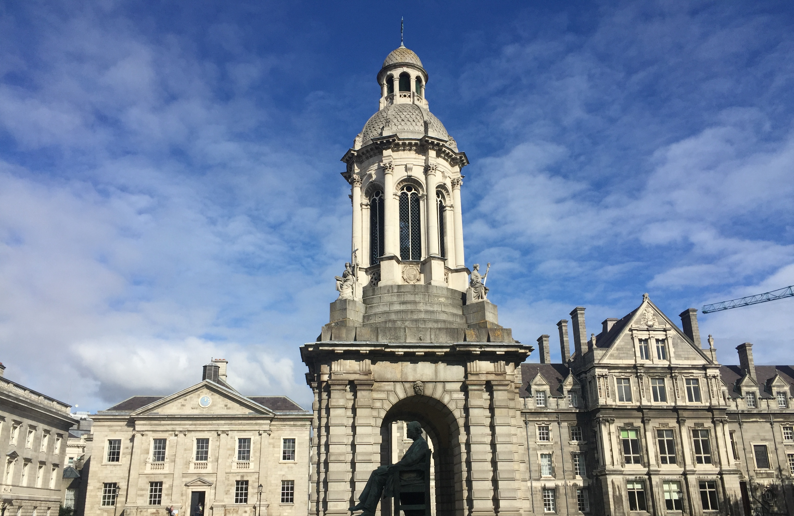
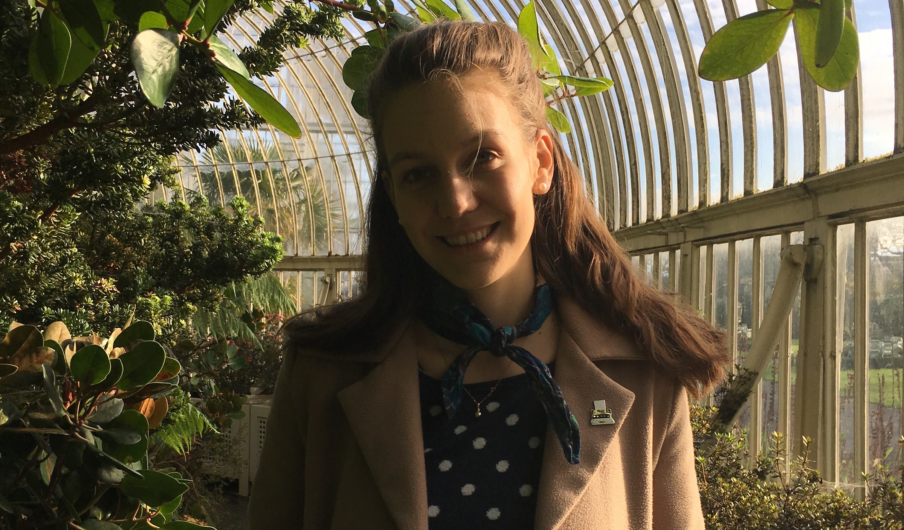

What is the DublinbaMentaMarta?
DublinbaMentaMarta is the platform for students wishing to continue their higher education abroad. It doesn't matter where you are from, if you would like to pursue your college diploma in a country other than your homeland, you found your place. The thousands of blog articles, interviews and videos are all here for you if you consider or already chose to start your unversity in a foreign country. Besides finding a great collection of pieces on the application processes of different countries (which is important!), you can find out more about the lifestyle that awaits you. Studying abroad doesn't end at getting prepared and accepted to your dream uni, it only starts there. The team of DublinbaMentaMarta would like to provide you with a forum where you can talk to other students in similar positions, where you can ask questions and find answers to your seemingly unique problems. It's hard enough take take this path and deal with the difficulties along your way, make your life a little easier and discover everything you can in advance. Prepare both physically and mentally. If you don't know where to start, click on the Start here! option in the menu.
About Me
Hey, I am Marta Menta, a third year Genetics student at Trinity College Dublin, in Ireland. I am originally from Hungary, but I love to travel and discover, so I was never afraid of the possibility of studying abroad. When I couldn't find my dream course (Human Genetics) at home I decided to look around in European countries and apply to as many as I find appealing, suitable for my needs. Haha, and this got me the problem of decision making since I got accepted to many top universities in England, Scotland, Ireland and Sweden.
A few pics of Ireland
Truly magical, belive me!